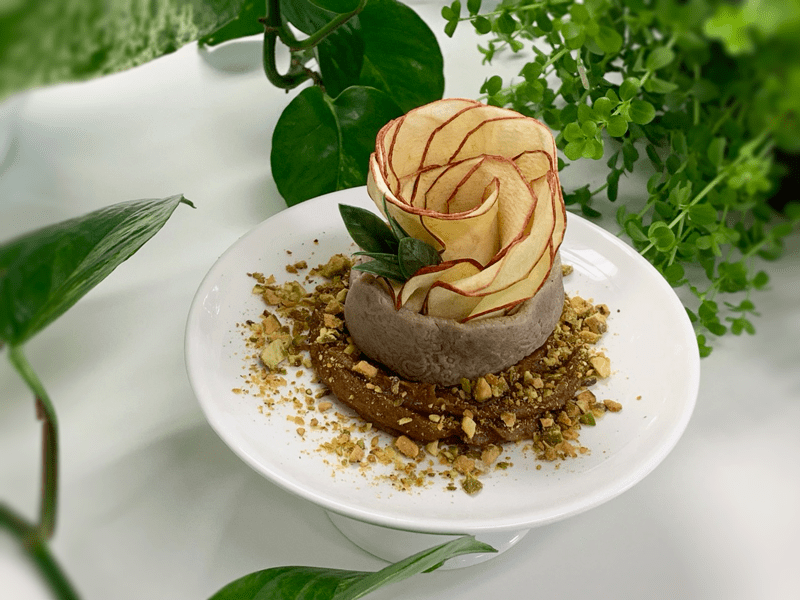
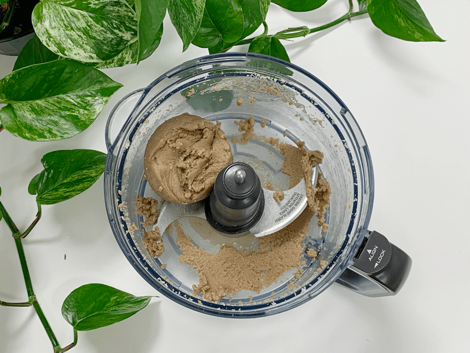
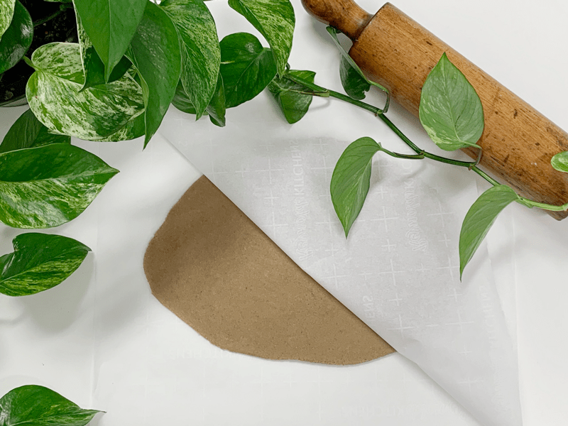
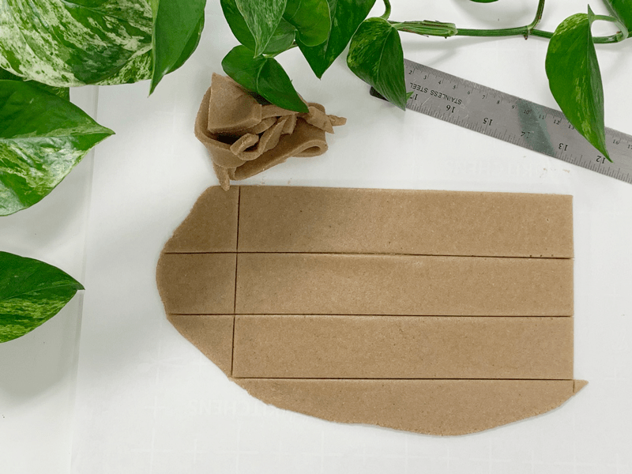
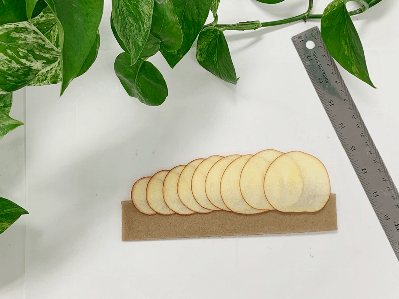
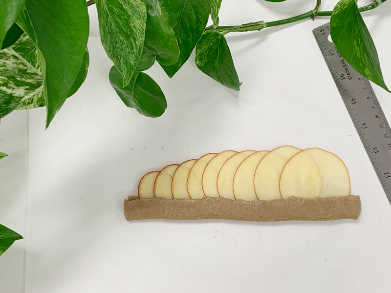
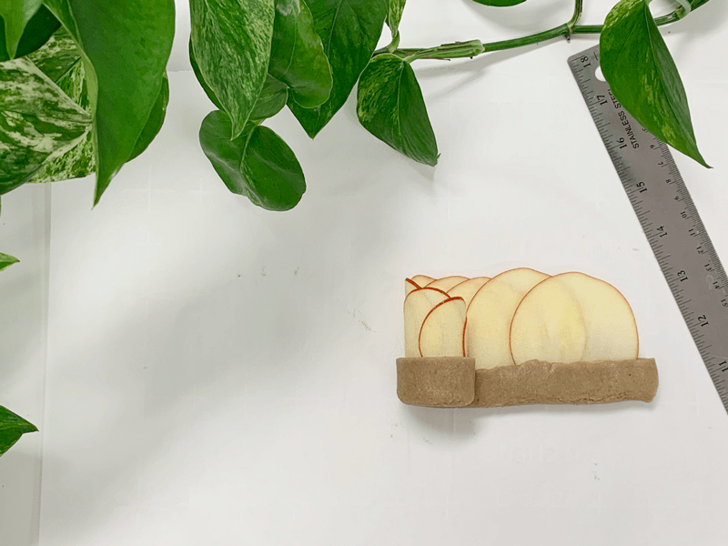
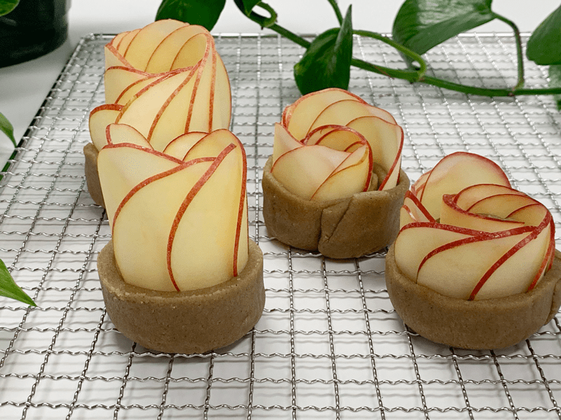
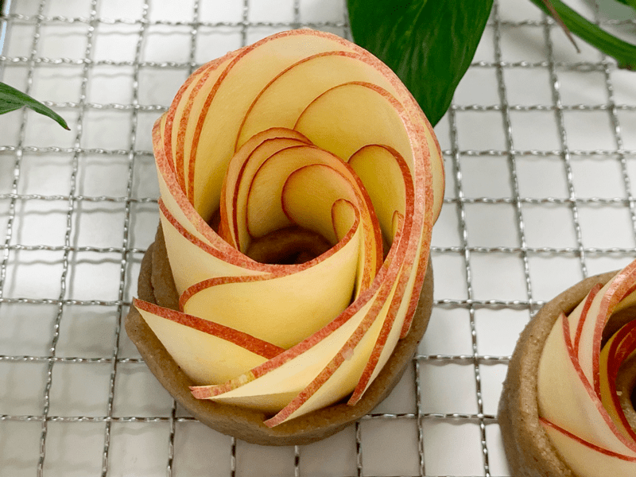
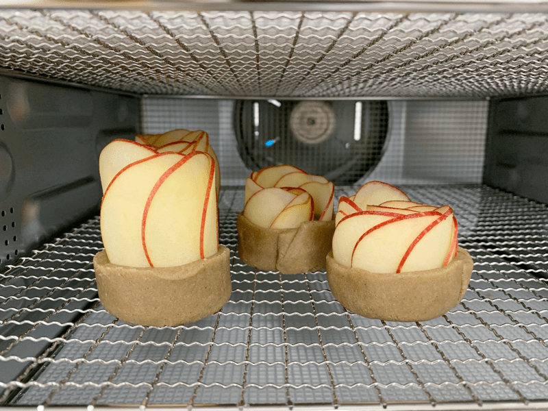

Antique Apple Blossom Pastries
– raw, vegan, gluten-free –
Simple yet elegant… that best describes these Antique Apple Blossom Pastries (outside of delicious!) I wish I could impress you by saying that this dessert turned out exactly as I had envisioned because it didn’t. I didn’t have a full-on game plan when I started this creation. But then truthfully, that is how most of my recipes go. They always start with an inspiration, and from there, I just let the magic unfold.

These pastries can be enjoyed by picking them up and biting right in… or you can dress them up in countless ways. In the photo to the right, I took some date paste that I had in the freezer and blended it with some Apple Pie Spice. I then placed a few spoonfuls on a plate, spreading them into a circle. After creating the apple blossoms, I had parts n’ pieces of apple bits left over, so I just blitzed them up in the food processor then sprinkled them over the date paste base… after that, I placed one of the pastries in the center, and a masterpiece was born.
This dessert won’t leave your belly bogged down in heaviness, but it will leave your taste buds savoring that last bite as though it were the last sweet delight that you will ever have.
Let’s talk about Apples
There are some tips and tricks that I want to share with you since I spent a few hours fine-tuning my approach to these apple blossoms. Because I care about your health… start with organic apples. Apples are one of the top “dirty” foods, meaning they easily absorb pesticides and chemicals. I don’t want any of that going into you. Next, I found out that bright red apples created the best-looking blossoms. You can use yellow or green, but the color won’t show up much around the rim of the petals.
I didn’t coat the apple slices with lemon juice on purpose. The oxidization process gave them that aged, antiqued, cooked appearance that I wanted. The last bit of info that is crucial is to make sure that you slice the apples thin. If they are too thick, they will snap in half as you start the rolling process. I used a mandolin such as this (one). I have owned mine for years, and it doesn’t have a brand name or any marking on it. Before you go and slice all the apples up… make a few slices and test rolling them to see how they hold up.
Lastly… I almost forgot to share this, but feel free to use all the different sizes of slices in diameter. I show a few examples below. But by using all sizes, you will get unique blossoms with each one that you make. You won’t find two identical flowers in nature… so why try to force the issue in the kitchen. Take that stress off of yourself and just enjoy the process.
The next important step… the pastry dough!
For this dough to turn out, you need to use very fine almond flour, not meal (not whole ground almonds). This not only gives the dough a more delicate finish, but it also helps to make it moldable. You can make raw almond flour yourself… it does take a few steps, but it is worth it in the end. In the food processor, fitted with the “S” blade, combine the almond flour, sweetener, and vanilla. Process until the batter is smooth and starts to gather in a ball form as the blades spin. I recommend using pure white almond pulp that has been dehydrated and ground into flour.
If this isn’t feasible for you, you can purchase processed almond flour. For that, I recommend this brand. Keep in mind that it isn’t raw. You could also try cashew flour, just make sure that it has a very fine texture. It is possible to try oat or buckwheat flour, but I haven’t tested it just yet. I fear that would be too drying on the pallet, but it’s worth investigating if these other nuts are not an option for you.
Ok, I think about covered everything to assure you that once completed with this recipe, you will have a simple but elegant dessert to serve all your loved ones. That is my goal anyway… should you have any questions along the way, shoot me a message through the comment section below. Blessings, amie sue
 Ingredients:
Ingredients:
yields roughly 10 pastries
Pastry:
Apples:
- 3-6 organic red-skinned apples
Plating idea:
- Date paste + 1 tsp Apple Pie Spice
- Shredded apple bits
Preparation:
Pastry:
- In the food processor, fitted with the “S” blade, combine the almond flour, sweetener, and Apple Pie Spice. Process until the batter is smooth and starts to gather in a ball form as the blades spin.
- If you don’t have or can’t find Apple Pie spice… You can mix together: 4 Tbsp ground cinnamon, 1 Tbsp allspice, 2 tsp nutmeg, 1 1/2 ground ginger, 1/2 tsp cardamom, and 1/4 tsp ground cloves. Shake together in a jar.
- You can use any liquid sweetener that fits into your dietary plan, but Yacon and honey might be too thick and sticky.
- Gather the dough and shape it into a ball. Set aside while you prepare the apples.
Slicing the apples:
- Wash and dry the apples. Leave the skins on for decoration.
- With a mandolin, create very thin slices.
- If they are too thick, they will snap when you try to roll them.
- It is a good idea to make a few slices and then test their flexibility before slicing all the apples and finding out later that they are too thick.
Assembly:
- Lay a piece of parchment paper on the countertop and place the dough ball in the center. Lay another sheet of parchment paper on top. Roll out to about 1/4″.
- If you roll it too thin, it won’t hold together.
- Trim off the edges to make a rectangle. Gather the scraps and roll out, doing the same process over and over till the dough is all used up.
- Length-wise cut the dough into 1 1/2″ strips.
- Lay one strip at a time in front of you.
- Layer the apple slices from one end to the other, covering only one side of the strip. Leave about 1/2″ of space on each end… please see the photos below for a full explanation.
- Use different sizes of apple slices and arrange them randomly (as shown below). This will create unique flower blossoms, making them all different.
- Fold the blank side of the dough over onto the apples, pinching the ends.
- Start to tuck and roll, from one end to the other. Set upright on the mesh sheet that comes with the dehydrator.
- Dry at 115 degrees (F) for 2 hours.
- Store leftovers in the fridge, well covered for about 3-4 days.
- For more plating ideas; add a smear of nut butter, jam, raw caramel or ganache on the plate and place the pastry in the center.
-

-
Combine the ingredients in a food processor, allowing it to run until a ball starts to form.
-

-
Roll the dough out between two pieces of parchment paper to roughly 1/4″ thickness.
-

-
Trim off the edges to make a rectangle. Gather the scraps and re-roll out, doing the same process over and over till the dough is all used up. My dough strips are roughly 1.5″ x 8″.
-

-
Layer the apple slice on one half of the pastry dough.
-

-
Fold the dough over so it covers the apple slices.
-

-
Roll the dough starting from the left to the right.
-

-
Place on the dehydrator sheet.
-

-
Looking good, huh?!
-

-
Dehydrate.
© AmieSue.com